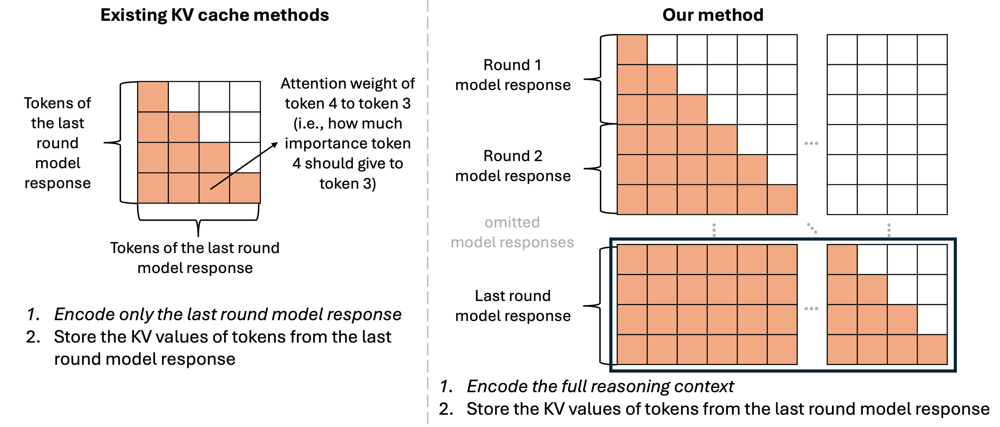

Models handle tasks independently
-
Learning from past experience is highly valuable—a skill that humans naturally possess but large language models (LLMs) do not have by default.
-
When models process the two questions sequentially, they handle them independently without retaining memory of the previous task, which prevents them from recognizing the connection and reusing reasoning.
Log-augmented generation
- We propose log-augmented generation (LAG), a framework that directly reuses prior computation and reasoning from past logs at inference time.
-
We represent logs using KV values corresponding to a subset of tokens in past reasoning traces to represent the full reasoning context—reducing size while enabling context-dependent interpretation.

Performance of LAG
-
We evaluated LAG on four knowledge- and reasoning-intensive datasets (Musique, 2WikiMultiHop, GPQA, and MMLU-Pro), and found that our method significantly outperforms standard agentic systems without log usage and existing reflection and KV caching techniques, achieving superior effectiveness and efficiency.